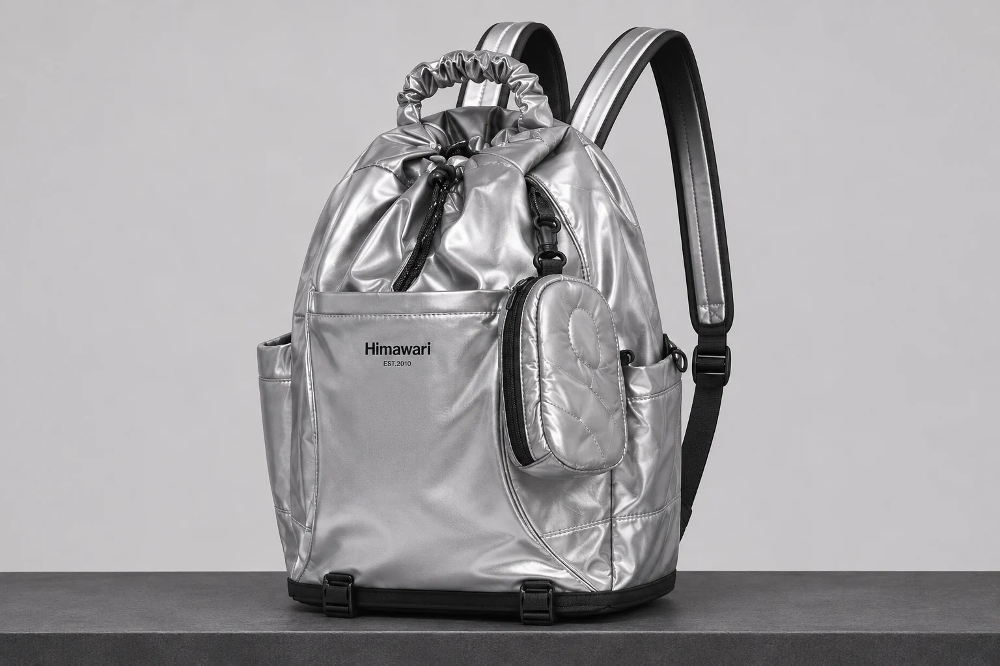
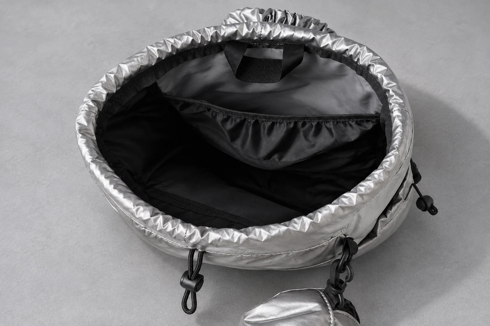

스트링 백팩 입구가 한쪽으로 몰리면 어디부터 볼까

스트링 백팩을 닫았는데 입구 원단이 한쪽에 더 많이 모여 있을 때가 있습니다. 한쪽 주름이 유난히 도톰해 보이거나 앞쪽으로 내려오는 검은 끈이 평소보다 옆으로 치우쳐 보이기도 합니다. 겉보기에는 비슷해도 입구까지 올라온 내용물이 원단을 밀었는지, 가방에서 손을 떼도 끈이 같은 자리에서 걸리는지에 따라 살필 곳이 달라집니다.
히마와리 No.0515 실버의 실제 상품 사진에서는 위쪽 짧은 손잡이 아래에 은색 입구 원단이 모여 있습니다. 검은 조임끈은 입구 가운데 부근의 검은 조절 장치를 지나 앞쪽으로 고리 하나를 이루며 내려옵니다. 어깨끈과 짧은 손잡이의 위치를 보면 조임끈을 구분할 수 있습니다. 가방의 외부 크기는 제조사 카탈로그 기준으로 가로 35cm, 세로 46cm, 폭 18cm입니다. 치수로는 끈이 원단 속에서 어디를 지나고 얼마나 긴지 알 수 없습니다. 우선 눈에 보이는 입구 가장자리부터 살펴보세요.
주름만 치우쳐 보일 때도 끈을 더 당겨야 할까요?
가방을 평평한 곳에 세운 다음 손잡이에서 손을 뗍니다. 가방을 기대어 둘 때는 한쪽이 눌리지 않는지 먼저 보세요. 한 손으로 들고 있을 때 생긴 기울기가 사라지면 입구의 주름 위치도 달라질 수 있습니다. 앞에서 원단이 많이 모인 자리를 찾고 위에서 입구가 실제로 벌어진 자리를 살펴보세요. 두 자리가 같은지 비교합니다. 주름이 빽빽한 쪽이 있어도 반대편 입구가 벌어져 있으리라고 단정할 수는 없습니다.
평소 방식으로 입구를 한 번 느슨하게 하고 위로 올라온 물건이 있는지 보세요. 포장지 끝이나 파우치 모서리가 원단을 밀고 있다면 물건을 낮춰 넣거나 잠시 꺼냅니다. 그 뒤 가방을 세워 손을 놓은 상태에서 입구가 어느 쪽으로 접히는지 비교해 보세요. 가방을 비웠을 때는 입구가 쉽게 움직이고 짐을 채웠을 때 같은 자리가 뻣뻣해진다면 그 자리를 밀던 물건의 높이나 방향부터 바꿔 볼 수 있습니다.
밖으로 보이는 끈의 위치가 달라졌다면요?
원단이 어디에 모였는지 봤다면 끈이 밖으로 나오는 자리를 찾습니다. 사진 오른쪽 옆주머니에도 끈이 따로 달려 있습니다. 입구를 살필 때는 가운데 조절 장치에서 앞쪽으로 내려오는 고리를 눈으로 따라갑니다. 짧은 손잡이 뒤로 넘어가거나 입구 주름에 겹친 곳이 있는지 보세요. 겉에 보이는 끈이 입구 한쪽을 지나 앞면 쪽으로 돌아 나와 있으면, 가방을 놓은 방향에 따라 더 길거나 짧아 보일 수 있습니다. 입구를 조금 느슨하게 풀어 보세요. 겉으로 드러난 끈을 원래 보이던 쪽에 놓고 다시 살펴봅니다.
가방을 세우고 한 손으로 입구 원단을 받칩니다. 다른 손으로 끈을 평소에 쓰던 방향으로 조금 움직여 보세요. 손이 움직이는 만큼 원단도 따라오는지 보면 상태를 설명하기 쉽습니다. 끈이 손에서 움직이는데 원단은 같은 자리에 걸려 있는 느낌인지, 원단은 잘 모이는데 겉에 남은 끈의 방향만 달라 보이는지 구분할 수 있습니다. 움직임이 막히면 그 위치에서 멈추고 끈과 닿는 원단이 접혀 있는지 먼저 확인합니다.

가방을 비워도 같은 곳에서 걸리면요?
내용물을 모두 뺀 상태에서 끈이 나오는 주변을 살펴봅니다. 입구 가장자리를 힘주어 펴기 전에 짧은 손잡이가 조임끈 위에 겹쳤는지 봅니다. 앞에 작은 파우치를 달았다면 파우치가 끈에 닿는지도 보세요. 겉에서 겹친 부분만 손으로 살짝 떼어 놓고 입구를 움직여 봅니다. 가방이 테이블에 한쪽으로 기대어 있으면 자세를 바로 세운 후 한 번 더 확인합니다. 상태가 그대로라면 여러 번 세게 당겨 끈을 빼내려 하기 전에 걸리는 위치부터 기록해 두는 편이 좋습니다.
기록할 때는 어떤 동작에서 멈추는지 함께 적습니다. 입구를 느슨하게 하다가 멈췄는지 닫다가 멈췄는지 적어 보세요. 끈이 겉으로 보이는 자리 근처에서 원단도 같이 당겨지는지 기록해 두세요. 가방 전체 사진과 입구가 보이는 사진을 한 장씩 남기세요. 실버 원단이 빛을 반사해 한 사진에서 가려진 부분도 다른 각도에서 확인할 수 있습니다. 닳아 보이는 끈이나 벌어진 봉제선이 눈에 띄면 가방을 비운 상태에서 찍어 판매처에 문의할 때 보여줄 수 있습니다.
짐을 다시 넣을 때는 입구를 한 번 더 봅니다
짐이 위쪽에 닿을 때만 한쪽 입구가 벌어졌다면 맨 위에 있던 물건 하나를 낮춰 보세요. 입구가 벌어지던 자리가 달라지는지 봅니다. 두세 가지를 한꺼번에 바꾸면 어느 물건이 원단을 밀었는지 알기 어렵습니다. 바꿔 놓은 뒤 가방을 손잡이로 잠깐 들었다가 다시 세워 보세요. 내려놓는 동안 물건이 옆으로 움직였다면 입구 주름도 처음과 달라질 수 있습니다. 외부 치수만 보고 물건을 추가하기 전에 조임끈이 움직일 자리가 남아 있는지 확인할 수 있습니다.
매번 원단 주름을 같은 개수로 맞출 필요는 없습니다. 평소처럼 끈을 움직여 보세요. 입구 한쪽이 내용물에 밀려 계속 떠 있는지 살피고 겉의 끈이 다른 부위에 걸려 있지 않은지도 봅니다. 한쪽이 치우쳐 보인 날에는 가방을 평평한 곳에 세우고 짐을 옮겨 보세요. 그래도 같은 자리에서 끈이 멈추는지 확인합니다. 어느 조건에서 문제가 반복되는지 알면 평소 짐을 놓는 자리를 바꿔 볼지, 입구 상태를 문의할지 결정하기 쉬워집니다.